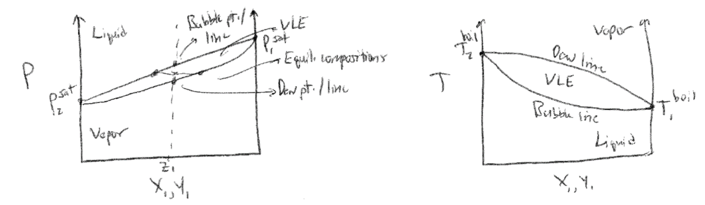
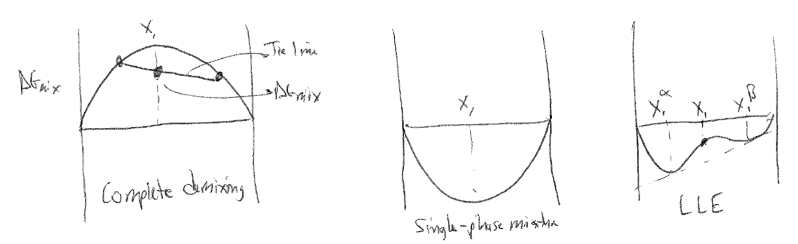
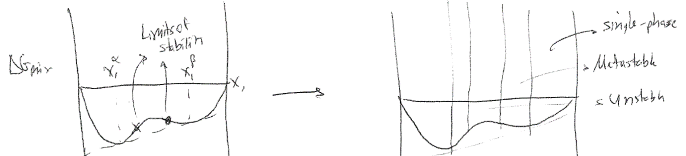
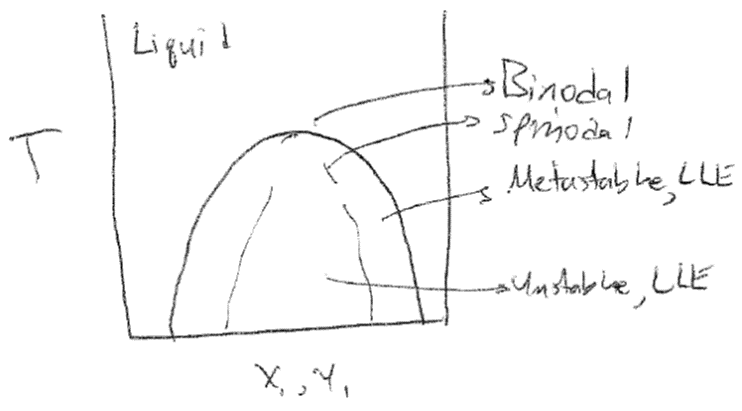

Non-ideal mixtures#
Recommended textbooks#
Tester and Modell, Ch. 9.8, 15.3
Topics in this lecture#
Raoult’s Law
Binary phase diagrams
Non-ideal mixtures
Activity
Announcements#
Final exam next Tuesday at 10 AM, EH 3024 (normal classroom). Practice problems are online.
Please fill out evaluations: https://go.wisc.edu/5i4d92 (Jonathan), https://go.wisc.edu/zesia5 (Course)
Raoult’s Law#
In the last lecture, we defined two simplified approximations for mixtures: an ideal-gas mixture and an ideal solution. An ideal solution is a solution in which the intermolecular interactions between system constituents are sufficiently similar that the interactions between different components are equivalent to the interactions between pure components with themselves. An ideal-gas mixture further approximates all components as ideal gases. For these systems, we derived the Lewis-Randall rule for the fugacities as:
We can use these expressions to derive an expression for phase equilibrium between a vapor phase and a liquid phase, in which we assume the vapor phase is an ideal-gas mixture and the liquid phase is an ideal solution. Phase equilibrium between these completely ideal phases thus represents an extreme of behavior and we will then consider deviations from ideality.
First, recall that the condition for phase equilibrium in multicomponent systems is:
This expression has to hold for each component of our mixture. Treating the vapor phase as an ideal-gas mixture and the liquid phase as an ideal solution gives:
We previously derived the Poynting correction as an approximation for the fugacity of a liquid-phase component, given by:
At vapor-liquid equilibrium, the fugacity of pure component \(i\) in the liquid phase is equal to the fugacity of pure component \(i\) in the vapor phase. Since the vapor phase of the mixture is an ideal-gas mixture, pure component \(i\) in the vapor phase is also an ideal gas. Therefore we have:
Typically, the exponential term is negligible unless the pressure significantly varies from the saturation pressure, so we can approximate the fugacity of the ideal solution as:
The notation emphasizes that the fugacity of component \(i\) in the liquid phase is equal to the saturation pressure of that pure component. Combining with the condition of phase equilibrium leads to Raoult’s Law:
Raoult’s law states that the partial pressure of component \(i\) in the vapor phase (\(y_i P\)) at equilibrium with a liquid solution is related to the saturation pressure of pure component \(i\) weighted by its mole fraction in the liquid solution. Since mole fractions have to sum to 1, we can also then write:
Binary phase diagrams#
We can plot the equilibrium conditions predicted by Raoult’s Law for a two-component system by drawing a binary phase diagram. In a binary phase diagram, the y-axis is typically the pressure (in which case the temperature is constant for the entire phase diagram) or temperature (in which case the pressure is held constant for the entire phase diagram) and the x-axis represents composition in terms of mole fraction. Such diagrams are called P-x-y or T-x-y diagrams respectively, with the \(x\) and \(y\) referring to the fact that the composition axis can refer to both composition in vapor and liquid phases. Each phase diagram represents a slice through a higher-dimensional \(PVT\) space.
{width=”100%”}
Consider an example P-x-y diagram for a system described well by Raoult’s Law. The overall mole fraction of the mixture is denoted as \(z_i\). At a high pressure, a single liquid phase is observed and \(x_i = z_i\) in this phase. At a low pressure, a single vapor phase is observed and \(y_i = z_i\) in this phase. For intermediate pressures, there is a region of the phase diagram in which we would observe vapor-liquid equilibrium, or VLE. If we were to imagine compressing an initially vapor system with composition \(z_i\) infinitely slowly, the pressure at which we first observe a drop of liquid is called the dew point, which corresponds to the first pressure for which the conditions of VLE are satisfied. Recall that these conditions are:
The locus of dew points for all possible system compositions is called the dew line, and represents the lower (on a P-x-y diagram) or upper (on a T-x-y diagram) bound of the phase envelope (or binodal) encapsulating the region of VLE. Similarly, we could imagine expanding an initially liquid system until we first observe a vapor bubble; this pressure would be the bubble point and the locus of all bubble points is the bubble line. In the VLE phase envelope, the composition of the vapor phase at any given pressure and temperature is equal to the composition of the corresponding point on the dew line (i.e., at the same pressure and temperature) while the composition of the liquid phase is equal to the composition of the corresponding point on the bubble line. Equivalently, we can imagine drawing a horizontal line connecting the bubble and dew lines - called a tie line - and the intersections of the tie line with the bubble and dew lines defines the compositions of the phases present at equilibrium. Since these compositions are determined only by the temperature and pressure, the overall composition of the system (\(z_i\)) only changes the relative amounts of the two phases present in the system. This behavior is analogous to how the total volume of a single-component system at the saturation pressure changes only the relative amounts of the two phases present.
VLE for non-ideal systems#
Raoult’s Law defines the simplest possible phase behavior in a binary system since we assume ideality for both phases. Raoult’s Law gives rise to a linear bubble line on P-x-y plots; this can be shown by applying the mass balance constraint to Raoult’s Law:
Ideal behavior is thus easy to see from P-x-y plots, as deviations from ideality will give rise to non-linear bubble lines. Solutions that have pressures larger than expected from Raoult’s Law are said to exhibit positive deviations, so that \(P > \sum_i^n x_i P_i^{\textrm{sat}}\). Positive deviations indicate a shift in the equilibrium toward the vapor phase (i.e., the fugacities of components in the liquid phase are higher than expected of an ideal solution, driving material to the vapor phase), suggesting that the intermolecular forces acting between the different components in the liquid phase are not ideal, but instead are repulsive relative to the pure components. In contrast, solutions that have vapor pressures smaller than expected from Raoult’s Law are said to exhibit negative deviations, indicating that intermolecular interactions in the liquid phase are attractive relative to the pure components. We can predict VLE behavior by calculating fugacities from tabulated compressibility factors or analytical equations of state using the framework previously developed without assuming that the liquid and vapor phases are ideal; we will not go into further details on these approaches.
 {width=”100%”}
{width=”100%”}
Activity and modified Raoult’s Law#
Since the entropy of mixing is always favorable (as discussed last lecture), any system that exhibits deviations from ideality (as described above) must have an enthalpy of mixing that is non-zero and thus cannot be approximated as an ideal solution. While we can treat any non-idealities through fugacity calculations for the liquid phase, these approaches tend to be quantitatively inaccurate since they are typically derived to model both the properties of the vapor and liquid phase. An alternative approach is to consider the deviation of the real solution behavior from the behavior of an ideal solution, in much the same way as the fugacity considers the deviation of a mixture’s behavior from that of an ideal-gas mixture. We will quantify such deviations by defining the excess properties of a solution. An excess property is defined as the difference between the property of a real solution and same property for an ideal solution at the same temperature, pressure, and composition; hence, it is similar to a departure function, but uses an ideal solution reference state rather than an ideal gas reference state. For some property \(B\), we can write the excess property as:
Here, \(\underline{B}\) (or \(B\) in intensive form) is a property of an entire mixture and \(\underline{B}^E\) is the corresponding excess property. We can further relate these properties to corresponding property changes upon mixing by subtracting an identical pure-component reference state from each term in the definition of the excess property:
To quantify deviations in real solution behavior at phase equilibrium, we want to consider the behavior of the excess Gibbs free energy, which we can write in intensive form as:
Recalling our expressions for the Gibbs free energy of mixing and the Gibbs free energy of mixing for an ideal solution from the last lecture, we can then write:
Finally, in the last lecture we also showed that we can relate the difference in the partial molar Gibbs free energy of component \(i\) and the molar Gibbs free energy of pure \(i\) to the difference between the fugacity of component \(i\) in a mixture and the fugacity of pure \(i\), yielding:
This last line follows because \(x_i f_i\) is the fugacity of a component in an ideal solution, so we again find that the excess Gibbs free energy measures deviations from ideal solution behavior rather than ideal-gas mixture behavior.
Excess properties are associated with the property of an entire single-phase mixture, but in the prior approach to calculating fugacities for mixtures we associated a fugacity and fugacity coefficient with each component of the mixture, and emphasized that these values were composition dependent. Similarly, we will now define a component-specific and composition-dependent quantity called the activity, \(a_i\), as:
Similarly, we can define the activity coefficient, \(\gamma_i\), as:
The activity measures the ratio between the fugacity of component \(i\) in a mixture and the fugacity of pure component \(i\), while the activity coefficient measures the deviation of the fugacity of component \(i\) in a mixture from component \(i\) in an ideal solution. The activity coefficient is conceptually similar to the fugacity coefficient, except the deviation is relative to ideal solution behavior rather than relative to ideal gas behavior (as is the same conceptual link for all of our discussion on excess properties so far). For an ideal solution, \(\gamma_i = 1\), just as for an ideal gas \(\phi_i = 1\). Importantly, the activity and activity coefficient are only calculated for condensed phases, meaning liquid and solid phases; this is because vapor phases will typically behave as ideal solutions. The excess Gibbs free energy can be written in terms of the activity coefficient as:
Similarly, since we know that any extensive property of a mixture can be written as a sum of partial molar properties, we can also write:
The partial molar excess Gibbs free energy of component \(i\) is thus equal to the log of the activity coefficient. In other words, the activity coefficient is a measure of how much the addition of component \(i\) to a single-phase mixture increases the Gibbs free energy in excess of what would be expected for an ideal solution. Conceptually, we can then see that if component \(i\) interacts via repulsive interactions (i.e., unfavorably) with other components, then \(\gamma_i > 1\), increasing the Gibbs free energy. Alternatively, if component \(i\) interacts via very attractive interactions with other components, then \(\gamma_i < 1\), decreasing the Gibbs free energy. Finally, if component \(i\) interacts with other components with the same magnitude as the other components interact with themselves, then \(\gamma_i = 1\) and we obtain ideal solution behavior.
Finally, we can relate the activity back to phase equilibrium by simply rewriting the definition of the activity coefficient to obtain:
This expression can then be used for any condensed phase and is particularly valuable if that condensed phase does not behave as an ideal solution. For example, using this expression for the liquid-phase fugacity while still assuming the vapor phase behaves nearly ideally leads to modified Raoult’s Law for VLE following a similar derivation as above:
In practice, the value of expressions using the activity or activity coefficient, rather than the fugacity, is that it allows us to derive activity models that only have to be accurate for the liquid phase, whereas fugacity calculations based on equations of state or compressibility factors require data that are accurate for multiple phases. Several empirical approaches exist for calculating activity coefficients, including techniques based on fitting empirical data (e.g., the one- and two-parameter Margules models, the van Laar model, and the NRTL model) and predictive models based on molecular properties (e.g., the Scatchard-Hildebrand model and UNIFAC). These techniques are out of the scope of this class but can be used to compute activity coefficients and thus determine conditions of phase equilibrium using the framework that we have just developed.
Gibbs free energy of mixing at LLE#
Let us now consider systems that exhibit phase separation into multiple liquid phases, such as oil-water mixtures. Our thermodynamic framework is unchanged - our conditions of liquid-liquid equilibrium (LLE) are still:
We use \(\alpha\) and \(\beta\) to refer to the compositions of two distinct liquid phases, with the second line following from the definition of the activity in the preceding section. We can understand why LLE arises by considering the thermodynamics of mixing as introduced in the preceding lecture. We will first generalize the concept of a tie line to include a line drawn on any thermodynamic diagram relevant to phase equilibrium which relates the properties of a system to the properties of systems specified by the end points of the diagram. If we consider a plot of the Gibbs free energy of mixing as a function of the mole fraction of component 1, a tie line can be drawn between any two points on this line as long as one point corresponds to a mole fraction of component 1 that is less than the overall mixture composition and one point corresponds to a mole fraction of component 1 that is greater than the overall mixture composition. Notationally, let us define one phase with a composition at an end point of a tie line as \(\alpha\) and another phase with a composition at an end point of a tie line as \(\beta\), with the compositions defined such that \(x_1^\alpha < x_1 < x_1^\beta\), where \(x_1\) is the overall composition of the system. We will define the amount of material in phase \(\beta\) as \(L^\beta\) and the total amount of material in the system as \(F\). We can then write two important tie lines relationships that have graphical interpretations as:
The first relationship follows from a mass balance and shows that the amount of material in each phase can be related to the ratio of the line segment from one phase composition to the overall mass fraction normalized by the line segment connecting the two end points; this relationship is called the lever rule and can be applied to any tie line (including tie lines drawn on binary phase diagrams). The second relationship simply expresses the total Gibbs free energy of mixing of a system that separates into two phases as the weighted average of the Gibbs free energy of mixing of each phase (given by the end points of the tie line) and can be interpreted as the equation for the segment of the tie line connecting \(x_\alpha\) and \(x_1\). This relationship thus shows that graphically the intersection of the tie line with the overall mixture composition gives the total Gibbs free energy change of the system if the system were to split into two phases with compositions set by the end points of the tie line.
Using the tie line concept, we can then relate phase compositions to the Gibbs free energy of mixing, building upon concepts in previous lectures. First, consider three plots of the Gibbs free energy of mixing, in which the Gibbs free energy of mixing is positive for all compositions, negative for all compositions, or exhibits two local minima:
{width=”100%”}
Each of these plots would represent a constant \(T,P\) slice through a phase diagram, or a line at a particular value of \(P\) or \(T\) on a P-x-y/T-x-y diagram. Using the tie line concept and recognizing that the Gibbs free energy is minimized at constant temperature and pressure, we can understand various phase behavior. First, consider the plot in which the free energy is positive for all compositions. Any tie line that we draw will lower the system free energy for any composition - that is, the intersection of the tie line with any \(x_1\) will always be lower than the value on the \(\Delta G_\textrm{mix}\) curve for that same value of \(x_1\). To minimize the total system free energy, we choose the tie line that leads to the lowest possible value of \(\Delta G_\textrm{mix}\), which would connect the two pure compositions. Therefore, the system completely demixes, and we can infer the amount of each pure system from the tie line. If the free energy of mixing is everywhere negative, we instead conclude that any tie line drawn will raise the system free energy. Therefore, phase separation is always unfavorable and we obtain a single-phase with a composition given by \(x_1\). This is the behavior for any constant \(P\) or \(T\) line on a phase diagram that never intersects the phase envelope.
We can now consider the more complicated case where the free energy of mixing has multiple local minima. For these plots, there are regions where any possible tie line will lead to an increase in the free energy, and thus phase separation is not observed. For overall compositions in between the local minima, we can instead find that tie lines can instead reduce the free energy, implying that phase separation is possible. It can be shown that the tie line that always minimizes the free energy is the tie line that is tangent to the free energy curve at two points - we call this the common tangent line. While we do not have time to derive this, it can be derived that for the conditions of phase equilibrium (i.e. equivalence of chemical potentials or fugacities) are met for the compositions connected by the common tangent line. Therefore, these compositions would correspond to the two compositions observed at phase equilibrium.
Referencing our previous discussion of stability, we can also see that the curvature of the Gibbs free energy of mixing will also have impliciations for mixture stability. Consider preparing a single-phase mixture with an overall mole fraction that intersects the Gibbs free energy of mixing at a region of the curve that is concave up (\(\left ( \partial ^2\Delta G_\textrm{mix}/\partial x_1^2 \right )_{T,P} > 0\)). Drawing a tie line to any two compositions close to the overall composition - representing small perturbations to the composition of a system that is initially a single phase - will lead to an increase in the free energy, which is unfavorable. Thus, the initially single-phase mixture is stable with respect to small perturbations, or metastable. Performing the same analysis for a region where the Gibbs free energy is concave down (\(\left ( \partial ^2\Delta G_\textrm{mix}/\partial x_1^2 \right )_{T,P} < 0\)) would show that any perturbation leads to a decrease in the free energy and the overall composition is unstable. We can therefore define two sets of compositions of interest: the compositions connected by a common tangent line that denote the Gibbs free energy-minimizing compositions at equilibrium, and the compositions corresponding to inflection points in the Gibbs free energy of mixing curve (\(\left ( \partial ^2\Delta G_\textrm{mix}/\partial x_1^2 \right )_{T,P} = 0\)) that denote the transition from metastable to unstable points, or the limit of stability. The locus of equilibrium compositions is the binodal and the locus of limits of stability is the spinodal.
Having discussed the underlying behavior of the system in terms of free energies, we can now return to analysis of phase diagrams. Examples for systems exhibiting LLE are drawn below:
{width=”100%”}
The locus of points encapsulating the phase envelope is typically referred to as the binodal for LLE (as in single-component systems), as the concept of a bubble and dew line does not apply since no vapor phase exists. Note that unlike VLE, the binodal for LLE does not have to intersect the y-axes as there is typically no liquid-liquid phase transition for most single-component systems; instead, at low pressure/high temperature you will instead observe solid phases. The locus of points connecting inflection points in the underlying free energy plots again is called the spinodal. Systems exhibiting LLE typically have long-lived metastable states in the region between the binodal and spinodal. If a system is initially prepared in a single-phase liquid region and the pressure is then changed to be within the spinodal, you would rapidly observe segregation of the system into two liquid phases (with compositions defined by the binodal, not the spinodal, since those are the compositions reached at equilibrium) in a process called spinodal decomposition. Alternatively, if the system were to reach a system within the region between the spinodal and binodal, you could observe a metastable single-phase system for a long period of time until eventually phase separation occurs by a process called nucleation in growth, in which a small region of the system spontaneously begins to separate and this regions grows slowly. Discussing more on these kinetic mechanisms of phase separation is outside of the scope of this class.
{width=”50%”}